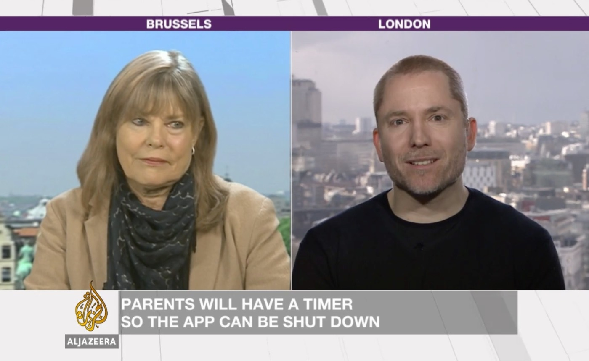

Friday Roundup
27th February, 2015 —
Like last week, we’ve rounded up the most interesting articles we’ve seen in the last week.
We’ve also updated our events list to include the events we’re speaking at over the next few months.
Where we’ve been this week
-

Al Jazeera Inside Story: Will YouTube profit from new child-safe app?
On Monday, Aral was on a panel with Brendan Gahan and Janice Richardson about Google's new YouTube For Kids app. Aral asks ‘why would we trust Google to create a safe space?’
-
Europe, we need to talk about institutional corruption.
“The “multi-stakeholder model” is nothing more than a fancy name for the institutionalisation of corporate influence on public policy.” A follow-up to the Al Jazeera Inside Story by Aral on his blog.
-
Defending Human Rights in a Digital Age - Live Blog from Goldsmiths
We were lucky to attend this panel last night in London. Fantastic discussion on technology, privacy, security, democracy and human rights. Hopefully the audio from the event will be available soon.
Corporate surveillance
-
Surveillance-based manipulation: How Facebook or Google could tilt elections
“Someone who knows things about us has some measure of control over us, and someone who knows everything about us has a lot of control over us. Surveillance facilitates control.” By Bruce Schneier on arstechnica, an excerpt from his book ‘Data and Goliath: The Hidden Battles to Collect Your Data and Control Your World’.
-
War on the data beasts: don’t let Google, Facebook et al control your digital lives
“DatenKraken, a term courtesy of Germany, is used to describe large ‘Surveillance Valley’ corporations that terrorise the ocean of information on the internet. Large corporations such as Google, Facebook and Amazon have wrapped their tentacles around the world, extracting private data from where they land and appropriating all its value for their own coffers.” By Ben Rossi and our friend Rafael Laguna on Information Age.
-
Google Is the New Status Quo in Schools
“If you’re inclined to feel that fast food companies without regard for public health have no place in our public schools, it follows that a corporation whose primary mission is selling personalized advertising based on aggregate data has no business playing a central role in our children’s learning.” By Mark Reeves on The New England Desk Company.
-
Smart devices can make the insurance biz proactive, not reactive
“But once insurance companies start subsidizing connected devices, what claim will they have on the data those devices generate? Connected smoke detectors can offer not just low battery warnings or smoke alarm notifications, but can share details about people in the home or even temperature data.” By Stacey Higginbotham on Gigaom.
-
Surveillance Valley - The Rise of the Google-Military Complex
“A book by Yasha Levine that tells the story of how Silicon Valley turned the Internet into the greatest surveillance apparatus in the history of mankind — an apparatus that's increasingly being used not just to monitor us, but to control our lives.” A book well-worth supporting on Kickstarter.
Corporate surveillance and law
-
Regulation, innovation and privacy
“The irony is, of course, that while commerce rails against government intervention in one form (privacy-protecting regulation) on the grounds that it inhibits economic activity, some commercial interests have also actively colluded with government intervention in another form (massive surveillance), only to find that that threatens the use of online services in all kinds of damaging ways.” By Robin Wilton (from 2013).
-
Facebook’s privacy policy breaches European law, report finds
“A report commissioned by the Belgian privacy commission has found that Facebook is acting in violation of European law, despite updating its privacy policy.” By Samuel Gibbs on The Guardian.
Citizen Four
-
Citizen Four Documentary
The documentary by Laura Poitras telling the inside story of Edward Snowden and the evidence he provided of the National Security Agency's mass indiscriminate and illegal invasions of privacy. The benefit of Citizen Four winning an Oscar is that it’s more widely-availble to watch. On the Channel 4 40D website until 4th March 2015.
-
Reddit AMA (Ask Me Anything) with Edward Snowden, Laura Poitras and Glenn Greenwald
Following the Citizen Four Oscar win, a long and detailed discussion on privacy, security, data collection and human rights.
And more…
-
People are not willing to trade privacy for security
Christian Payne interviews Professor Kirstie Ball at The Open University. She is Director of the Centre for Research into Information Surveillance and Privacy (CRISP) and investigator in the EU Project SurPRISE (Surveillance Privacy Security).
-
Why are women leaving the tech industry in droves?
“That's a huge problem for the tech economy. According to the industry group Code.org, computing jobs will more than double by 2020, to 1.4 million. If women continue to leave the field, an already dire shortage of qualified tech workers will grow worse.” By Tracey Lien on the LA Times.